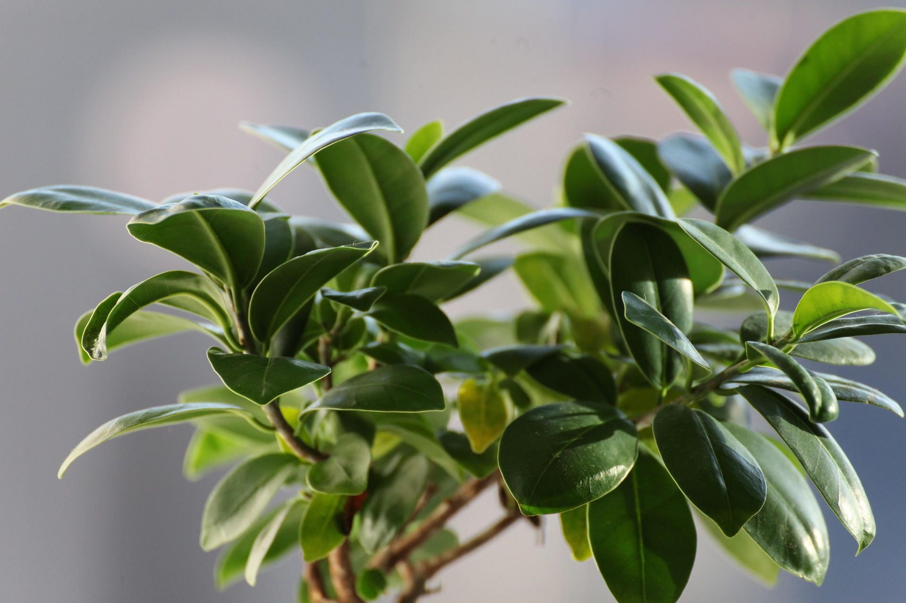
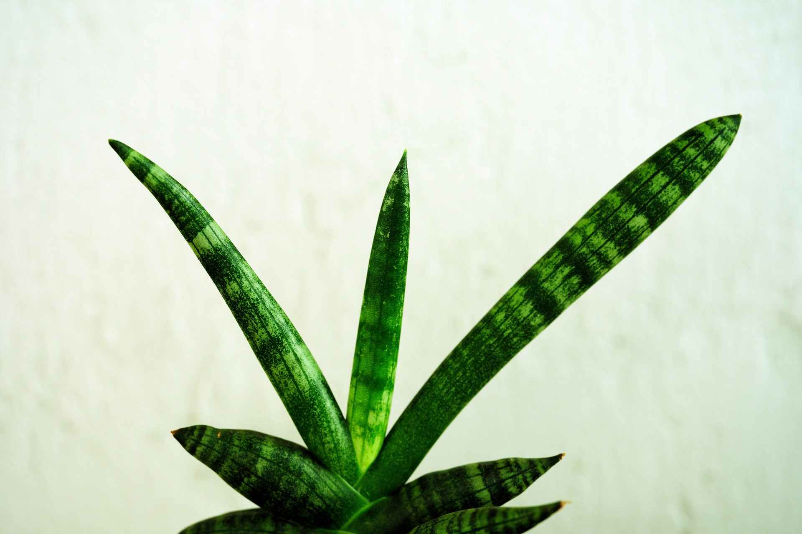
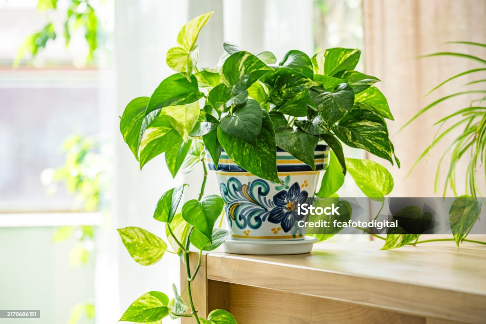
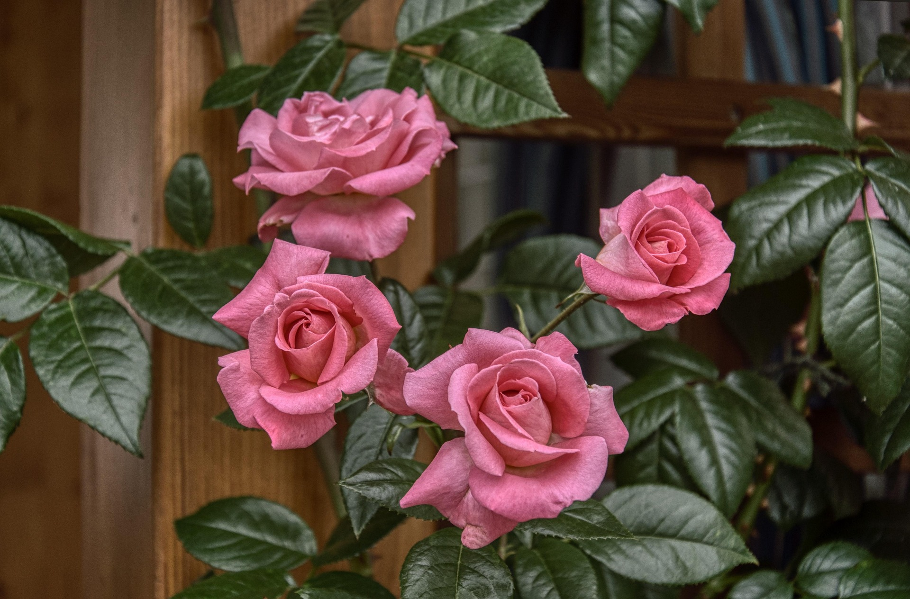

Ficus lira
Ficus lyrata
- Luz
- Brillante indirecta, sin sol directo intenso.
- Riego
- Moderado, cuando la capa superior del sustrato esté seca.
Un recorrido por las plantas que cultivo en casa, con fichas descargables sobre sus cuidados: luz, riego, temperatura y floración.
Mis plantas están organizadas en dos grupos según dónde viven mejor. Seleccioná una tarjeta para ir al listado completo, con sus imágenes y la ficha en PDF de cada una.
Especies que viven dentro de casa, en general con luz indirecta y riegos moderados a escasos. Descargá la ficha en PDF de cada una para ver el detalle completo de sus cuidados.

Ficus lyrata

Sansevieria trifasciata

Epipremnum aureum
Especies que necesitan sol pleno o media sombra luminosa, ideales para balcón, patio o jardín. Descargá la ficha en PDF de cada una para ver el detalle completo de sus cuidados.

Lavandula angustifolia

Pelargonium sp.

Rosa sp.
Hola, soy Juan. Mantengo este sitio como catálogo personal de las plantas que cultivo en casa, tanto de interior como de exterior. Me gusta documentar sus cuidados y compartir lo que voy aprendiendo sobre jardinería.
Este proyecto también es un ejercicio de accesibilidad web: busca ser navegable por teclado, compatible con lectores de pantalla y utilizable con el zoom del navegador al 200% sin romper el diseño.
¿Tenés alguna consulta o sugerencia sobre alguna planta? Escribime desde la sección de contacto.
¿Preguntas sobre alguna planta o sobre el sitio? Completá el formulario y me pondré en contacto.
Este formulario es una demostración estática (sitio sin backend ni scripts): al enviarlo, tu cliente de correo abrirá un mensaje dirigido a contacto@mijardin.com con los datos cargados.